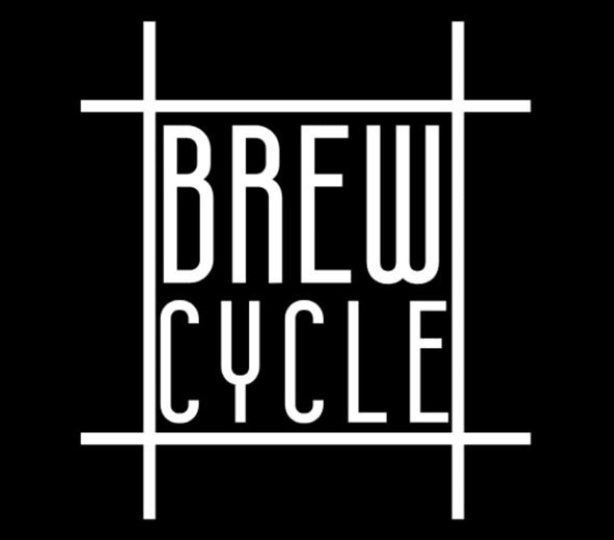
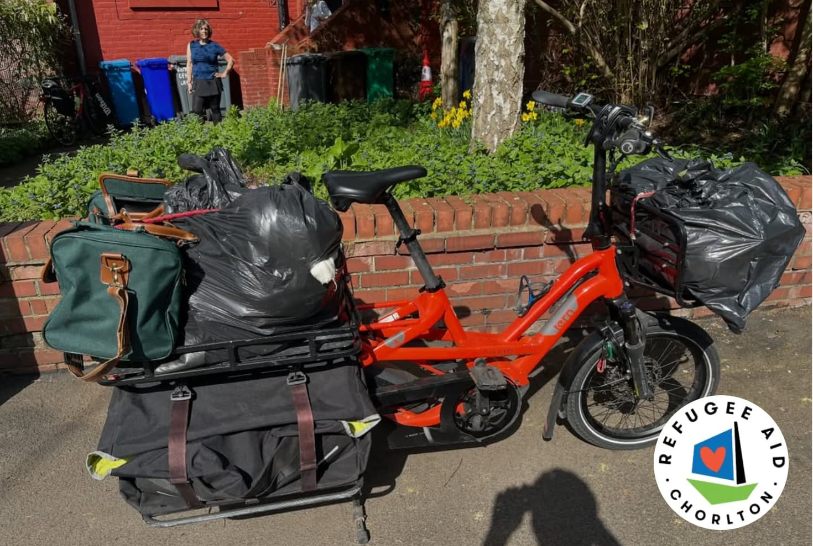
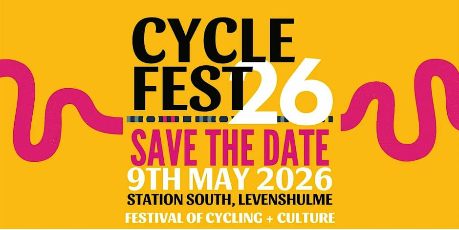
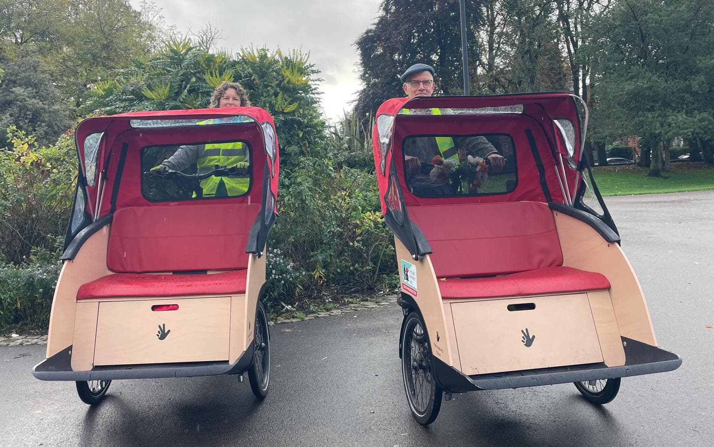
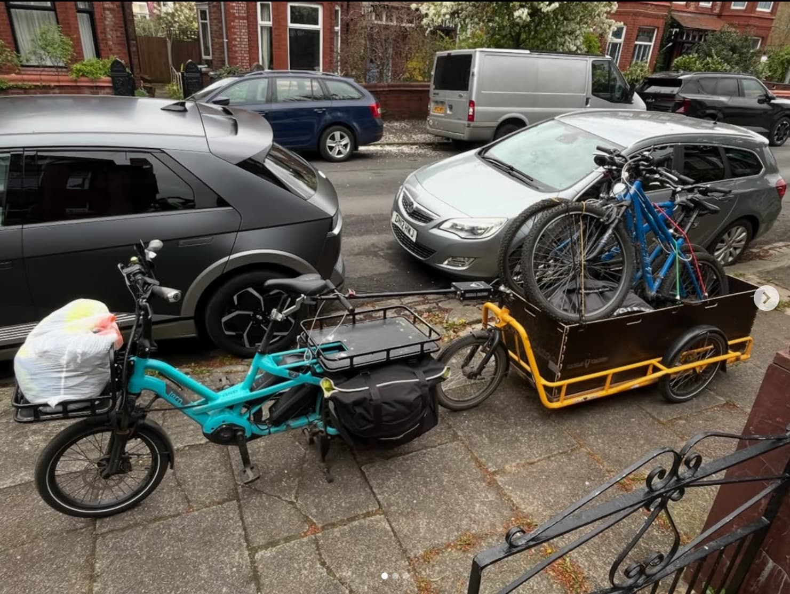
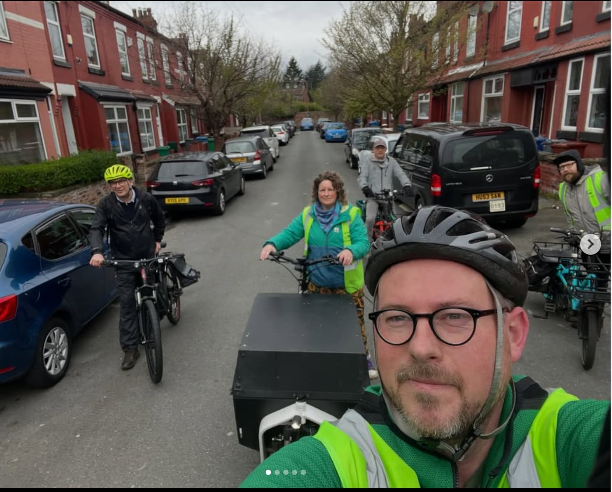
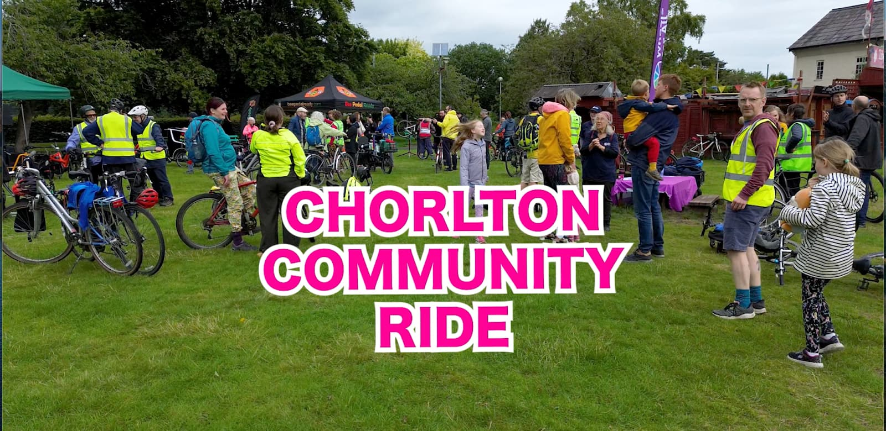
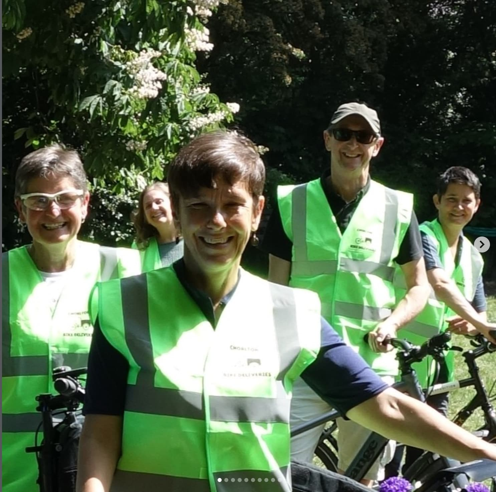
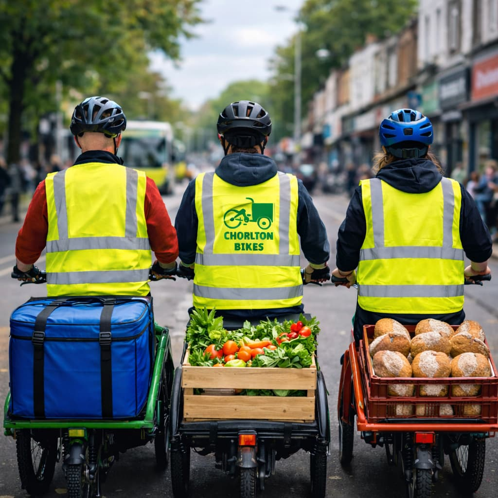

Hello Friends and Members of Chorlton Bikes,
We're really glad you're here. This newsletter is a chance to share what we've been up to - our riders, our partners, and the difference we're making together in Chorlton and beyond.
With more sunshine, more riders and plenty of plans taking shape, April has been another busy and positive month for Chorlton Bikes.
April
2026
As the days got brighter, we welcomed new faces, kept our wheels turning across the community, and continued building towards some exciting events later in the year.

Brewcycle Collaboration @ St Margaret's
- ☕ After months of voluntary collections of coffee grounds, we have formally partnered with Brewcycle who work with MUD at Forever Fields (St Margarets).
- ☕ They use the coffee grounds (and husks!) we collect from local coffee shops to add to their vermiculture project to produce excellent compost to then use for growing produce.

Care UK Collections
- 🧺 We collected clothing and household item donations to take to Chorlton Central Church where Care UK do such incredible work.
- 🧺 We collect local donations every Wednesday to fit in with their Wednesday collection window of 10am-12pm.
- 🧺 They are in real need of volunteers to staff their Wednesday night collections otherwise they might have to close this window.

Cycle Fest 2026 @ Station South
- 🎉 We're excited to be an event partner at Cycle Fest on Saturday 9th May at Station South in Levenshulme.
- 🎉 The day starts with a wide range of organised rides, before the afternoon brings everyone together from 1.30-4.30pm for stalls, activities and a proper celebration of Manchester's cycling community.
- 🎉 We'll be there with a gazebo, raising awareness of Chorlton Bikes, the good work we do and how people can get involved to support us - so it's a great chance to come by, catch up and connect with others involved in the cycling scene.

Chorlton Open Gardens Trishaw Rides
- 🌿 This June (27th and 28th) we are thrilled to be teaming up with the good folk at Chorlton Open Gardens to provide trishaw rides between gardens for those with limited mobility.
- 🌿 Volunteer-run and community focused, Chorlton Open Gardens was founded in 2011 to raise money for Freedom from Torture - a charity that provides medical treatment, counselling, practical assistance and medical-legal documentation to survivors of torture and organised violence.
- 🌿 We plan to have two trishaws in service over the weekend and hope to offer advance bookings as well as adhoc rides from a central hub, details of which are being finalised this coming month.
- 🌿 We're looking for volunteer pilots and will be organising some training in the coming weeks so please get in touch if you're interested.

Bikes 4 Refugees
- ♻️ More pre-loved bikes were collected from local residents, refurbished by our mechanic marvel Dave, and distributed across the Bikes4Refugees network.
- ♻️ We also received lots of donated cycling gear this month - a huge thank you to everyone who contributed.

Long Bois Social Ride x Deliveries
- 🥐 When our regular rider, Reuben has a well deserved break from riding, we decided to scope out the delightful coffee shops who sell Long Bois beautiful pastry creations!
- 🥐 Thanks to Liam, Rob and Nick for joining us on the day.
- 🥐 Shout out to Kiosk, Something More Productive and Hikari - some great coffee places to try in Didsbury & Withington.

Community Ride Update
- 🚴 We have applied for funding through MCR Active to fund the filming (from the peerless local filmmaker Luke Shepherd) and promotion of this year's community ride on the 6th September - Save the Date!
- 🚴 We've been talking to the Parks Authority at Wythenshawe and Chorlton to confirm our route and we're looking to collaborate with Bee Pedal Ready again to provide the Ride Leaders to ensure the safety of all participants.

Earth Day and Chorlton Bikes' 6th Birthday
- 🌍 We marked our 6th birthday and Earth Day on 22nd April with some nostalgic posts on social media.
- 🌍 Here's to many more years of zero emissions deliveries, championing local cycling and supporting our community however we can!

Welcome New Riders
- 👋 We have welcomed lots of new riders onto the team in the last month. So much so that we're having a little break from recruiting any new riders to the team for the time being.
- 👋 Welcome Cu, Scott, Ben, Alex and Chris!
Thank You
Thank you to everyone for the continued energy, care and commitment that keeps Chorlton Bikes moving forward. April has been another fantastic month - and we're excited for what's coming next. 🚴♀️💚